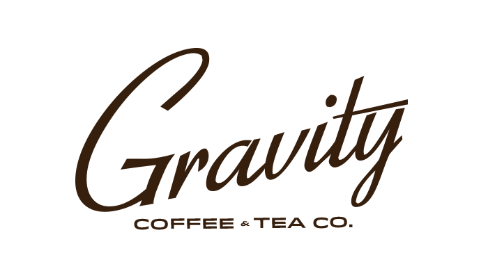
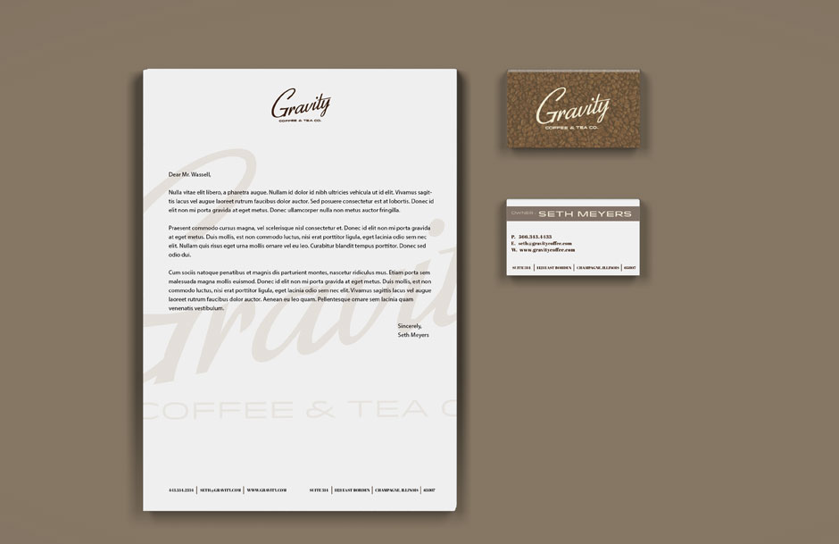
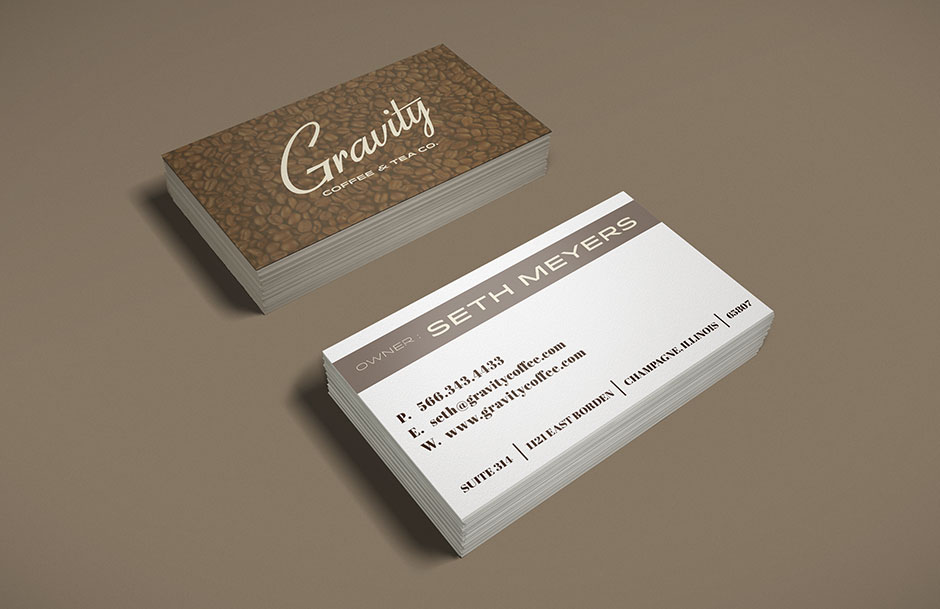

GRAVITY
About the Project
The class was assigned a brief that asked us to create a logo that could have been made a hundred years ago or today. While the main focus was a coffee company, we were also asked to develop it in a manner that would allow it to be used in multiple branding and product applications not coffee related.
What I did
After several rounds of sketches and deciding to focus on a typographical based mark I began exploring type choices and honing in on composition. For class I screen printed a few shirts and brown carry out bags to accompany the letterhead and business cards.


